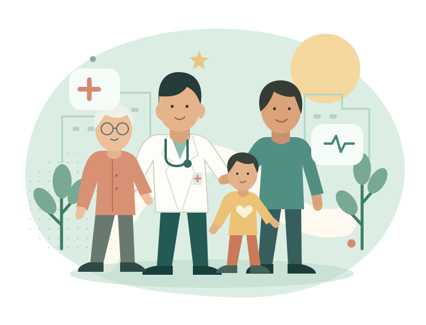

從認識自己的健康，到建立更好的生活習慣，屯門地區康健中心與您同行，照顧每一個健康需要。

為您連繫最新的活動與資訊。
認識中心的健康推廣活動，為自己訂立合適的生活目標。
探索適合自己的社區活動，與家人及朋友一起參與。
了解中心的服務範圍及參與方法，找到合適的支援。
按地區、專業及共付額探索服務提供者目錄。
使用字體大小、高對比及灰階設定，讓瀏覽更舒適。
從社區開始，認識中心及各類支援資訊。
以居民為本，連結社區的基層醫療健康服務。
認識健康生活，從日常小改變開始。
了解健康風險，及早關注自己的需要。
連繫專業團隊，支援持續的健康管理。
透過社區支援，走好復康旅程每一步。
不論您想了解服務、參加活動，或為家人尋找支援，我們都願意與您同行。
公告功能示範：如遇惡劣天氣或服務調整，中心可在此發布已審批的服務安排。此訊息不是實際服務通知。
日期、時間、地點、名額及參加資格將由中心確認；這個預覽不接受報名。